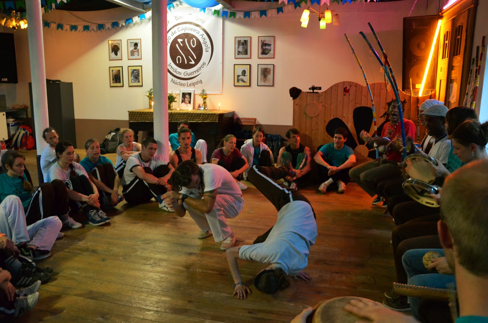

Mit seinen knapp 15.000 Einwohnern ist Plagwitz zudem der 6. größte Stadtteil in Leipzig. Wer es auf Architektur und Sehenwürdigkeiten abgesehen hat, wird hier ebenfalls fündig. Zahlreiche Altbauten und Gründerzeithäuser reihen sich hier aneinander. Große ehemalige Fabriken wurden bereits zu modernen Loft-Wohnungen umgebaut. Ein Trip mit dem Boot oder Kanu über den Karl-Heine-Kanal bzw. die Weiße Elster lohnen sich ebenfalls.
In Plagwitz ist Ausgehen ganz wunderbar möglich. Um in geselliger Runde den Durst zu löschen oder bis zum Morgengrauen zum Takt der Musik zu tanzen, Plagwitz bietet immer den passenden Ort.
Leider kann an dieser Stelle das Westwerk (oben im Bild), was ganz und gar und ganz besonders ein Ort des Zusammenkommens ist, nicht mehr hier aufgeführt werden, da es wahrscheinlich geschlossen wird. Es soll stattdessen ein Supermarkt mit Parkplatz hingebaut werden.
Doch es haben sich einige Initiativen gebildet, die sich dagegen stellen und vielleicht magst du dich auch hier informieren. Denn ein Westwerk sollte jede Stadt haben!
Alte Damenhandschuhfabrik
In der Alten Damenhandschuhfabrik, auch dhf, lässt es sich gut feiern. Es finden wöchentlich verschiedene Veranstaltungen statt.
Neben Hip Hop und Rap kann das Programm auch mal zwischen Hardcore und Metal, Latin Salsa und Rock oder Drum`n`Bass und Reggae variieren.
Seit 2016 befindet sich der Club in den Händen neuer Betreiber und diese verfolgen ein neues Konzept. Die dhf bietet eine möglichst abwechslungsreiche Alternative zur sonstigen Leipziger Elektro- und Technoszene.
Am besten überzeugt ihr euch selbst und sucht euch eine geeignete Veranstaltung raus und habt einfach Spaß.
Das Elipamanoke ist ein gemütlicher Club mit einer sehr schönen Atmospähre. Es gibt mehrere Floors, auf denen hauptsächlich Elektro gespielt wird,
wobei auch hier von Balkan Beats, bis hinzu 80er Jahre Synthie-Pop Klängen, alles dabei ist. Der Außenbereich lädt zudem an wärmeren Tagen auch zu Grillparties ein, sodass auch an späten Nachmittagen ins Wochendene gestartet werden kann.
Und wer neben dem Tanz noch mehr Bewegung braucht, kann jeden Dienstag ab 18 Uhr beim Open Air Ping Pong und Kicker Turnier mitmachen.
Gute Gespräche sind im Dr.Seltsam keine Seltenheit, besonders wenn es in die späten Abendstunden geht. Aber diese Kneipe ist nicht nur Kneipe, das Nützliche wird hier auch mit dem Guten verbunden.
Tagsüber ist das Dr. Seltsam eine Fahrräder-Verkaufs-, Reperatur- und Verleihstation. Regelmässig finden aber auch coole Discoabende statt zu besonders schöner Musik, wie 1980er Nigerian Afro Funk oder Kosmische Disco. Das einzig Seltsame ist, wer in Leipzig war
und noch nie im Dr. Seltsam war.
Im Täubchenthal finden viele Konzerte statt, die so nicht möglich wären. Trotz cooler Acts und auch großer Namen, schaffen die Konzerte im Täubchenthal immer eine vetraute und intime Atmosphäre, gerade weil es auch so schön dort ist. Barock trifft auf Industrial Charme, aber irgendwie auch eine Prise Wohnzimmer.
Auch hier ist musikalisch alles dabei, ob Bands, Solokünstlerinnen oder DJanes, ob indoor oder outdoor, einiges wird geboten. Zudem finden auch tolle Märkte jährlich statt, wie das Streetfoodmarket-Festival, original mit Foodtrucks und Ständen aus aller Welt oder dem Designer- und Vintagemarkt-Festival, wo die nächsten Lieblingsteile nur so aneinandergereiht auf einen neuen Träger warten.
Also ich bin Fan, überzeugt euch am Besten selbst. Wie wäre es denn mit dem Prideball am 15. Juli - der großen Abschlussparty zum Leipziger CSD 2017?
"Die Kneipe ist eine Institution und bietet Fingerfood, Biere sowie Kulturveranstaltungen und sonntags Tatort."
Ole Wels,Sep 28, 2016
Tolle Kneipe mit mehr Charme, als anderswo habe Stadtteile haben ;) jedoch nichts für Nichtraucher, dafür trifft man hier immer nette interessante Menschen und kann oft tolle kleine Konzerte erleben.
"Die Kulturlounge bietet Live-Acts, Szenekunst und überwiegend elektronische Beats in industrieller Atmosphäre."
Adresse: Markranstädter Str. 4, 04229 Leipzig
Telefon:
Öffnungszeiten: Fr und Sa 21.00 - 05.00 Uhr
Ly Fla,Jan 29, 2017
Ganz toller club. Ich war erst einmal da, werde in Zukunft öfter hingehen. Lustig ist das gemischte Klo, die Bedienungen an der Bar waren alle sehr nett und haben trotz der Menschen Fülle den Überblick behalten. Für den kleinen Hunger konnte man sich günstig gegrilltes kaufen. Ein Kritik Punkt, im ganzen Laden wurde geraucht. Schön das man bei der Kälte nicht raus muss, trotzdem eher unangenehm.
Liebes Prellbock Team. Immer wieder eine wechselnde Speisekarte, angepasst zur Saison und alles frisch und lecker zubereitet. Ein Gaumengenuss für Jedermann. Auch kleine kulinarische Spezialitäten, die immer frisch zubereitet und angeboten werden, fehlen nicht und runden das Angebot ab. Behaltet weiter Eure freundliche und lockere, ungezwungene Art. Das macht Euch ganz "Besonders". Liebe Grüße vom Dirk Sowinski.
Öffnungszeiten: Mo 12.00 - 15.00 Uhr Di - Fr 12.00 - 23.00 Uhr Sa 18.00 - 23.00 Uhr
Steffen Richter,Mar 20, 2017
Sehr leckere traditionelle chinesische Küche. Bei den mittlerweile recht häufigen Besuchen, ist mir aufgefallen, dass der Schärfegrad der Speisen schon sehr variiert. Schade fand ich auch, dass man an manchen Tischen so ziemlich im Gang und somit im Weg sitzt vor allem in größeren Runden.
Sehr nettes Team. Wir besuchen das Puzzles regelmäßig um neue Spiele auszuprobieren und nebenher gutes Essen zu angemessenen Preisen zu genießen. Die Beratung zur Auswahl von Spielen ist ebenfalls ausgezeichnet. Sehr empfehlenswert für gesellige Abende. Einzig die Auswahl an Bieren könnte etwas größer sein.
"Extrawürste sind bei uns mehr als Willkommen. Du magst keine Tomaten aber dafür stehst Du auf richtig viel Mais? Für uns kein Problem. Wir kreieren Deinen persönlichen Lieblings-Wrap – immer frisch und immer lecker."
Marc Nowak,May 15, 2017
Immer wird eine hervorragende Qualität.
Janet Beckmann,Mar 16, 2017
Oft dort gegessen. Vielfältlig und immer lecker
Daniel Balas,Sep 13, 2016
Heute das erste Mal getestet. Das sind echte Wraps! Sehr sehr lecker und vor Deinen Augen frisch gemacht. Spitze!
Liebes Prellbock Team. Immer wieder eine wechselnde Speisekarte, angepasst zur Saison und alles frisch und lecker zubereitet. Ein Gaumengenuss für Jedermann. Auch kleine kulinarische Spezialitäten, die immer frisch zubereitet und angeboten werden, fehlen nicht und runden das Angebot ab. Behaltet weiter Eure freundliche und lockere, ungezwungene Art. Das macht Euch ganz "Besonders". Liebe Grüße vom Dirk Sowinski
"Wer keine vietnamesische Mama hat, isst bei Mr Chu im Chumumi ♥." (Facebook)"
Michael Lipaczewski,Jan 29, 2017
Tolles vietnamesischen Restaurant mit Speisen, die man so in den meisten lokalen nicht findet. Ich habe mir sagen lassen, dass es genauso schmeckt wie in Vietnam. Dazu eine tolle Atmosphäre bei n eine sehr stilvoll eingerichteten Laden. Sehr zu empfehlen.
"Extrawürste sind bei uns mehr als Willkommen. Du magst keine Tomaten aber dafür stehst Du auf richtig viel Mais? Für uns kein Problem. Wir kreieren Deinen persönlichen Lieblings-Wrap – immer frisch und immer lecker."
Marc Nowak,May 15, 2017
Immer wird eine hervorragende Qualität.
Janet Beckmann,Mar 16, 2017
Oft dort gegessen. Vielfältlig und immer lecker
Daniel Balas,Sep 13, 2016
Heute das erste Mal getestet. Das sind echte Wraps! Sehr sehr lecker und vor Deinen Augen frisch gemacht. Spitze!
Öffnungszeiten: Mo 12.00 - 15.00 Uhr Di - Fr 12.00 - 23.00 Uhr Sa 18.00 - 23.00 Uhr
Steffen Richter,Mar 20, 2017
Sehr leckere traditionelle chinesische Küche. Bei den mittlerweile recht häufigen Besuchen, ist mir aufgefallen, dass der Schärfegrad der Speisen schon sehr variiert. Schade fand ich auch, dass man an manchen Tischen so ziemlich im Gang und somit im Weg sitzt vor allem in größeren Runden.
In Leipzig Plagwitz gibt es eine Vielzahl an Sportvereinen, Freizeiteinrichtungen und Kulturvereinen. Hier siehst du eine kleine Auswahl beliebter Vereine in Plagwitz:
Copoeira Angola Leipzig
Lust auf einen Sportverein, der nicht eine der klassischen Sportarten wie Fußball etc. anbietet? Dann schaut euch doch mal das Video vom Capoeira-Tanz an und probiert einfach mal ein paar leichte Schritte aus. Gar nicht so einfach!
Tauchen Sie ein in den traditionellen brasilianischen Kampftanz. Das hier gezeigte "Capoeira Angola" ist die ursprüngliche Version der Kampfkunst. Hierbei wird sehr viel Wert auf ein harmonisches Zusammenspiel gelegt, allerdings lockern Humor und Witz das Ganze auf.

Siehe hier alle Veranstaltungen und Angebote vom Leipziger Capoeira Verein. Ein Besuch lohnt sich!
Musikschule MUSIFA Leipzig
Lust auf ein wenig musikalische Betätigung oder Schulung? Dann wirst du bei der MUSIFA Leipzig fündig. Hier siehst du die verschiedenen Abteilungen der Musikschule:
Gelange hier zur Internetseite der Musikschule oder für die Social-Media Fans hier zur Facebook Seite. Wenn Sie also Spaß an Musik haben stöbern Sie einfach im umfangreichen Kursangebot der MUSIFA Leipzig.
ARS AVANTI - Verein für Kunstkultur
Traumhafte Gemälde, bezaubernde Porträts oder abstrakte Skulpturen. Bei Ars Avanti, dem Verein für Kunstinteressierte findest du sicherlich auch das passende Kunstwerk für dich.
Seit seiner Gründung im Jahr 2002 organisiert der Verein jährlich die offenen Ateliers im gesamten Stadtgebiet, richtet Ausstellungen aus, vermittelt Künstler zu entsprechenden Projekten und organisiert Projekte für Kinder und Jugendliche.
Wenn du Interesse an Kunst oder der Kulturgeschichte in Leipzig hast, dann bist du hier genau richtig. Einen Link zur Seite mit den Kontaktdaten sowie einem kleinen Blog findest du hier .
GaraGe - Technikzentrum für Jugendliche
Technik soweit das Auge reicht. In der GaraGe kannst du deiner Leidenschaft nachkommen und dich als kleiner Ingenieur mal so richtig austoben.
Wenn du dich für Technik begeistern kannst bietet die GaraGe auf 1200 m² Technikerlebniswelten für Kinder und Jugendliche. Dabei gibt es zahlreiche Werkstätten und Laboratorien, Ausstellungs- und Seminarflächen, die sich mit den Themen der Automatisierungstechnik, Bionik, Elektrotechnik und Digitalisierung auseinandersetzen. Das coole daran ist, dass es keine feste Zielgruppe bei dem Projekt gibt, sodass sich die GaraGe vom Elementar bis zum Sekundarbereich, aber sich ebenfalls an Berufsschüler und Studenten richtet.
Beispielsweise kann durch die Zusammenarbeit mit Porsche eine Vorbereitung auf eine mögliche Ausbildung realisiert werden.